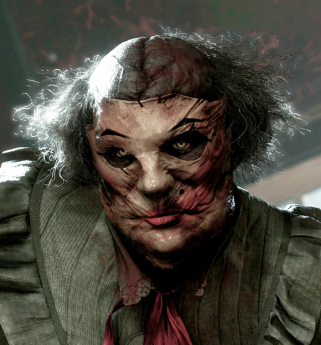
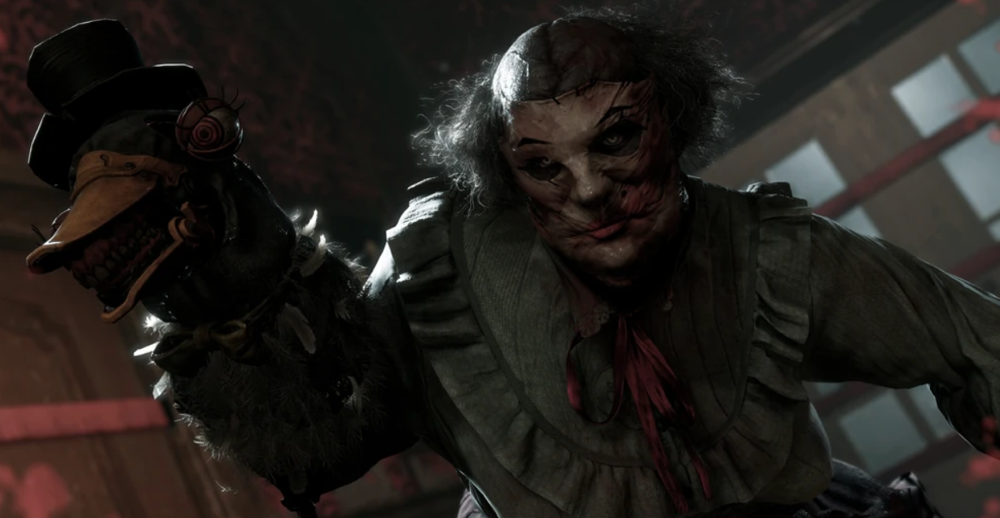
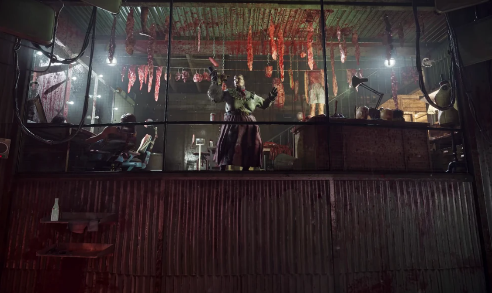
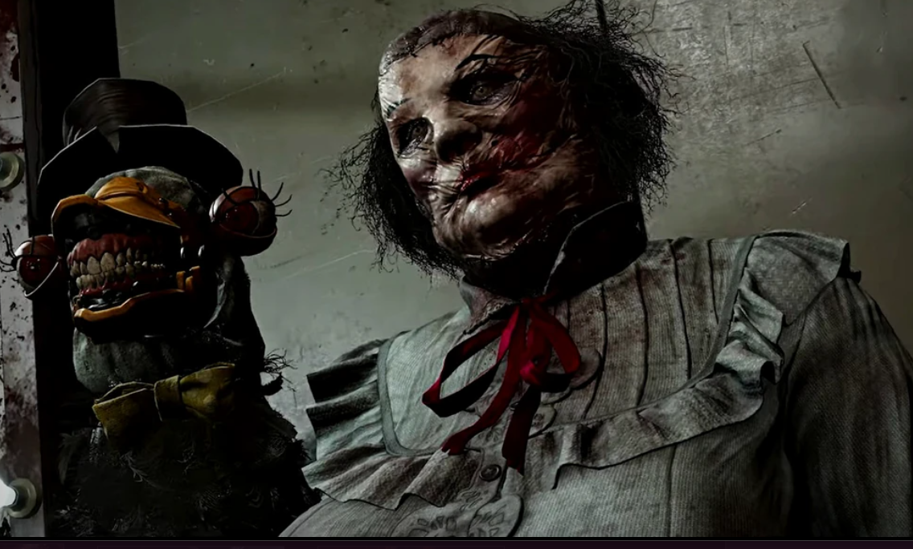

Матушка Гусберри
Локация: Детский дом, Парк развлечений, Фабрика игрушек
Оружие: Ручная дрель(Кукла в виде гуся)
Филлис Футтерман или Матушка Гусберри (ориг. Mother Gooseberry) — антагонист игры The Outlast Trials, бывшая ведущая детской телепрограммы «Час с Матушкой Гусберри», одна из экс-попов и главный актив на объекте Синьяла, в корпорации Мёркофф.
Биография
Филлис была дочерью стоматолога доктора Футтермана из Филадельфии, и насколько известно, матери у неё не было. С юных лет Филлис работала ассистенткой доктора Футтермана. Во время работы она использовала кукол, чтобы отвлекать пациентов-подростков во время стоматологических операций. Помимо этого у Филлис были увлечения в таксидермии и музыкальном театре. В итоге популярность Футтерманов привела к тому, что с 1951 года в эфир вышла местная телепрограмма «Час с Матушкой Гусберри». Однако в какой-то момент доктор Футтерман таинственно умирает, и его тело так и не было найдено. После всего этого Филлис Футтерман начинает страдать истерией и диссоциацией, значительно меняясь в худшую сторону. После этого тон телепрограммы «Час с Матушкой Гусберри» значительно изменился, однако подростковая аудитория всё равно продолжала смотреть её. К несчастью после просмотра изменившейся передачи многие подростки менялись в худшую сторону, начиная употреблять наркотики и совершать преступления. В 1955 году полиция совершает рейд на телестудию Футтерленд по обвинению в похищении людей и рэкете, однако полностью обезумевшая Футтерман не собиралась так просто сдаваться. В итоге ей удаётся дрелью убить двоих полицейских, а также ранить ещё пятерых, прежде чем её всё-таки сумели задержать. После всего произошедшего Филлис Футтерман была приговорена судом к пожизненному заключению в тюрьме Холмсбург к северу от Филадельфии. Капитан полиции Стэнли Хоуд описал студию Футтерленд, как «Самое гротескное архитектурное извращение со времён чикагского Замка убийств Генри Холмса». В тюрьме Филлис, как и большинство заключённых, подверглась дерматологическим экспериментам под наблюдением доктора Клигмана. Она подверглась воздействию углекислоты, диоксина и трансплантатов инфицированной плоти трупа. После всего этого Футтерман, даже несмотря на то, что её внешность была изуродована, чувствовала себя прекрасно, что нельзя сказать о других заключённых. В добавок ко всему у женщины было раздвоение личности, вторая из которых называла себя покойным доктором Футтерманом. Эта личность была намного кровожаднее самой Филлис, хотя некоторых она и забавляла. Также благодаря своим замечательным способностям к механике, Филлис Футтерман из различных объедков смастерила себе ручную куклу чревовещателя в виде гуся. Личность доктора Футтермана начала себя проявлять в виде куклы на её правой руке, частенько разговаривая с личностью самой Гусберри. В 1955 году корпорация Мёркофф искала главных активов для их проекта «Тенева», и этим занялся сотрудник отдела сбора информации Клайд Перри. В декабре 1956 года сотрудник Клайд Перри находит Гусберри и отправляется в Холмсбург, чтобы побеседовать с ней. Сумасшедшая женщина даже попыталась напасть на сотрудника Мёркофф, но к счастью прикованные к ней цепи не дали ей этого сделать. Во время двадцатиминутного разговора Перри узнаёт, что Филлис якобы проявляет интерес к научному прогрессу и самосовершенствованию, желая сменить обстановку. После окончания беседы сотрудник настоятельно рекомендует её для испытаний в проекте «Тенева» на объекте Синьяла. Спустя какое-то время Матушку Гусберри доставляют на объект Синьяла, где она становится одной из испытуемых. Однако Филлис быстро стала доминировать над другими экс-попами, подтверждая свою кандидатуру в роли главного актива. Поскольку в пятидесятых шла Холодная война, сотрудники Мёркофф в партнёрстве с ЦРУ планировали создать из испытуемых усиленных послушных бойцов для боёв против коммунистических противников. Однако несмотря на все усилия, Мёркофф не смогли сдерживать контроль над испытуемыми, и проект «Тенева» был прикрыт. С лета 1958 года обезумевшая на тот момент Матушка Гусберри, как и остальные из экспериментальной популяции, стали противниками для реагентов на испытаниях в новом проекте «Тенева 2». Женщина носила на лице пришитую к коже белую маску с размазанным макияжем, а на её правой руке всё также находилась чревовещательная кукла доктора Футтермана со встроенным сверлом в клюве.
The Outlast Trials
Матушка Гусберри является главным активом на испытательных полигонах «Детский дом», «Парк развлечений» и «Фабрика игрушек». Там главный актив противостояла реагентам, и в этом ей помогали другие агрессивные экс-попы. Безумцы патрулировали зону испытаний, стараясь выследить и кровожадно убить любого реагента, который попадётся им на глаза. Неуравновешенная женщина бегала по территории, вооружившись дрелью в кукле, которой она любила изощрённо убивать других испытуемых. Она также любила срезать с человеческих трупов лица и груди, вывешивая их на манекенах или стенах. Для неё это была весёлая игра с детьми, которых за непослушание она была готова жестоко наказать. Матушка Гусберри появляется на полигоне «Особняк» во время вводного испытания, подготавливающего реагента-новичка к будущим испытаниям. Изначально она просто пугает реагента, но ближе к концу Гусберри начинает преследовать его. На полигоне «Детский дом» основным испытанием было «Причастите сирот», а также у него присутствовали мк-стимуляции «Накормить детей», «Приютите сирот», «Соберите детей божьих» и «Воссоедините семью». На полигоне «Парк развлечений» основным испытанием было «Измельчите негодяев», а также у него присутствовали мк-стимуляции «Накажите негодяев», «Откройте ворота», «Просверлить Футтермана», «Сломайте Футтерманов», «Заберите свою свободу» и «Одурачьте детей». На полигоне «Фабрика игрушек» основным испытанием было «Извратить Футтермана», а также у него присутствовали мк-стимуляции «Раздавите секс-игрушки», «Сожгите секс-игрушки», «Прекратите работу фабрики» и «Обработайте фабрику газом». Филлис Футтерман, также как и другие главные активы, как помеха, может участвовать в одиночном перерождении реагентов на полигоне «Особняк», куда попадают испытуемые, которые в ходе испытаний якобы заработали шанс на свободу. Она будет периодически ходить на полигоне испытания и мешать реагенту достигнуть своей последней миссии. Также после прохождения всех критериев протокола освобождения, она или же другой главный актив появится в конце недалеко от завершающей двери, чтобы напоследок не дать реагенту закончить начатое.
Галерея



Интересные мелочи
- Имя матушки Гусберри, предположительно, является отсылкой на Матушку Гусыню.
- На английском языке слово «gooseberry» означает «крыжовник» (дословно: гусиная ягода). Иногда можно заметить, как Гусберри поёт песню про прогулку среди крыжовника.
- Исходя из слов Гусберри можно предположить, что её отец скончался из-за одновременного употребления бензедрина и алкогольного напитка Джин.
- Есть теория, что агрессивная личность Гусберри в виде доктора Футтермана показывает, что в детстве отец мог жестоко высказываться и обращаться с ней. Тем не менее Филлис всё равно неоднократно говорит о своём отце с восхищением.
- Филлис Футтерман посвящена 2 глава комикса The Murkoff Collections.